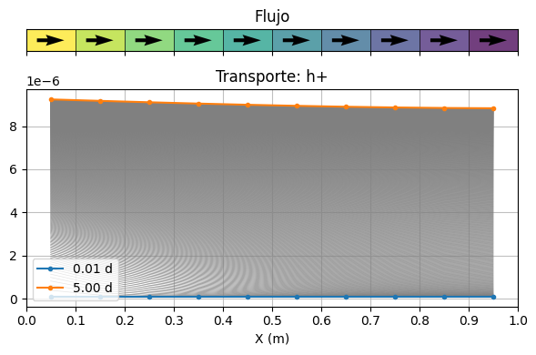

Code
import os
import numpy as np
import matplotlib.pyplot as plt
import pandas as pd
import xmf6
import flopy
from denit import gwf, gwt, plot, utils
linea = 50*chr(0x2015)# --- DEFINICIÓN DE LAS RUTAS Y NOMBRES ---
#
paths = dict(
# Ejecutable de Modflow: WINDOWS
mf6_exe = r"C:\Users\luiggi\Documents\GitSites\mf6_tutorial\mf6\windows\mf6",
mf6_dll = r"C:\Users\luiggi\Documents\GitSites\mf6_tutorial\mf6\windows\libmf6.dll",
#
# Nombre de los modelos y espacios de trabajo
flow_name = "flow",
flow_ws = "mf6_gwf_gwt_comp",
tran_name = "transport",
tran_ws = "mf6_gwf_gwt_comp",
#
# Nombre de los archivos de datos
u_init = "u_init.dat",
)
#
# --- DEFINIENDO CONDICIONES INICIALES ---
#
print(linea)
print("Generating initial conditions".center(50))
components, species = utils.initial_conditions(paths, comp = True, spec = True)
ncomp = len(components["names"])
print(linea)
#
xmf6.nice_print(paths, "Paths and filenames")
#
# --- DATOS PARA LA SIMULACIÓN ---
#
# Paso del tiempo
dt = 1.0e-2
NT = 1
#
# Discretización del espacio
nlay, nrow, ncol = 1, 1, 10
delr, delc, delz = 0.1, 1.0, 1.0
dis = {
'length_units' : "meters",
'nlay': nlay,
'nrow': nrow,
'ncol': ncol,
'delr': delr,
'delc': delc,
'top' : delz,
'botm': 0.0
}
xmf6.nice_print(dis, "Spatial discretization")
#
# Parámetros físicos.
phys = dict(
perioddata = [(1, 500, 1.0)], #PERLEN, NSTP, TSMULT
porosity = 0.5, # Porosity of mobile domain (unitless)
hydraulic_conductivity = 1.0, # Hydraulic conductivity ($cm s^{-1}$)
inflow = 0.2, # Specific discharge ($cm s^{-1}$)
longitudinal_dispersivity = 1.0,# 0.5,
retardation_factor = 1.0,
components = components["names"], # Components names
source_concentration = components["ext_water"], # Source concentration (unitless)
initial_concentration = components["init_conc"], # Initial concentration (unitless)
species = species["names"], # Components names
s_source_concentration = species["ext_water"], # Species Source concentration (unitless)
s_initial_concentration = species["init_conc"], # Species Initial concentration (unitless)
)
xmf6.nice_print(phys, "Physical parameters")――――――――――――――――――――――――――――――――――――――――――――――――――
Generating initial conditions
――――――――――――――――――――――――――――――――――――――――――――――――――
Paths and filenames
―――――――――――――――――――
mf6_exe = C:\Users\luiggi\Documents\GitSites\mf6_tutorial\mf6\windows\mf6
mf6_dll = C:\Users\luiggi\Documents\GitSites\mf6_tutorial\mf6\windows\libmf6.dll
flow_name = flow
flow_ws = mf6_gwf_gwt_comp
tran_name = transport
tran_ws = mf6_gwf_gwt_comp
u_init = u_init.dat
―――――――――――――――――――
Spatial discretization
――――――――――――――――――――――
length_units = meters
nlay = 1
nrow = 1
ncol = 10
delr = 0.1
delc = 1.0
top = 1.0
botm = 0.0
――――――――――――――――――――――
Physical parameters
―――――――――――――――――――
perioddata = ―― data array ――
= (1, 500, 1.0)
porosity = 0.5
hydraulic_conductivity = 1.0
inflow = 0.2
longitudinal_dispersivity = 1.0
retardation_factor = 1.0
components = ―― data array ――
= h+ - co3-2
= cl-
= no3-
= n2(aq)(p)
= ch2o(aq)
= hco3- + co3-2
= o2(aq)
source_concentration = ―― data array ――
= -2.51155e-06
= 0.001
= 0.001
= 1e-16
= 0.002
= 0.000540132
= 0.000252947
initial_concentration = ―― data array ――
= [-3.69029e-07 -3.69029e-07 -3.69029e-07 -3.69029e-07 -3.69029e-07
-3.69029e-07 -3.69029e-07 -3.69029e-07 -3.69029e-07 -3.69029e-07]
= [1.e-16 1.e-16 1.e-16 1.e-16 1.e-16 1.e-16 1.e-16 1.e-16 1.e-16 1.e-16]
= [1.e-05 1.e-05 1.e-05 1.e-05 1.e-05 1.e-05 1.e-05 1.e-05 1.e-05 1.e-05]
= [1.e-16 1.e-16 1.e-16 1.e-16 1.e-16 1.e-16 1.e-16 1.e-16 1.e-16 1.e-16]
= [1.e-05 1.e-05 1.e-05 1.e-05 1.e-05 1.e-05 1.e-05 1.e-05 1.e-05 1.e-05]
= [0.00100047 0.00100047 0.00100047 0.00100047 0.00100047 0.00100047
0.00100047 0.00100047 0.00100047 0.00100047]
= [1.e-06 1.e-06 1.e-06 1.e-06 1.e-06 1.e-06 1.e-06 1.e-06 1.e-06 1.e-06]
species = ―― data array ――
= h+
= cl-
= no3-
= n2(aq)(p)
= ch2o(aq)
= hco3-
= o2(aq)
= co3-2
s_source_concentration = ―― data array ――
= 1e-08
= 0.001
= 0.001
= 1e-16
= 0.002
= 0.000537611
= 0.000252947
= 2.52155e-06
s_initial_concentration = ―― data array ――
= [1.e-07 1.e-07 1.e-07 1.e-07 1.e-07 1.e-07 1.e-07 1.e-07 1.e-07 1.e-07]
= [1.e-16 1.e-16 1.e-16 1.e-16 1.e-16 1.e-16 1.e-16 1.e-16 1.e-16 1.e-16]
= [1.e-05 1.e-05 1.e-05 1.e-05 1.e-05 1.e-05 1.e-05 1.e-05 1.e-05 1.e-05]
= [1.e-16 1.e-16 1.e-16 1.e-16 1.e-16 1.e-16 1.e-16 1.e-16 1.e-16 1.e-16]
= [1.e-05 1.e-05 1.e-05 1.e-05 1.e-05 1.e-05 1.e-05 1.e-05 1.e-05 1.e-05]
= [0.001 0.001 0.001 0.001 0.001 0.001 0.001 0.001 0.001 0.001]
= [1.e-06 1.e-06 1.e-06 1.e-06 1.e-06 1.e-06 1.e-06 1.e-06 1.e-06 1.e-06]
= [4.69029e-07 4.69029e-07 4.69029e-07 4.69029e-07 4.69029e-07 4.69029e-07
4.69029e-07 4.69029e-07 4.69029e-07 4.69029e-07]
―――――――――――――――――――
m=0
#
# - SIMULACION DEL FLUJO CON GWF ---
#
# --- Construcción de la simulación de flujo
phys["perioddata"] = [(1, 1, 1.0)] #PERLEN, NSTP, TSMULT
phys["s_source_concentration"][m] = species["ext_water"][m] * 100
print(phys["s_source_concentration"][m] )
o_sim_f = gwf.build(phys, dis, m, paths)
#
# --- Ejecución de la simulación ---
print(" GWF", end = "")
o_sim_f.run_simulation(silent=True)
#
# - SIMULACIÓN DE TRANSPORTE CON GWT PARA CADA COMPONENTE
#
# --- Construcción de la simulación de transporte
phys["perioddata"] = [(5, 500, 1.0)] #PERLEN, NSTP, TSMULT
o_sim_t = gwt.build(phys, dis, m, paths)
#
# --- Ejecución de la simulación de transporte ---
print(f"-GWT: C{m+1}: {species["names"][m]}", end= " |")
o_sim_t.run_simulation(silent=True)9.999999999999999e-06
GWF-GWT: C1: h+ |(True, [])grb = flopy.mf6.utils.MfGrdFile("mf6_gwf_gwt_comp/flow.dis.grb", verbose=False)
grid = grb.modelgrid
x = grid.xycenters[0]
y = grid.ycellcenters[0]
xv = grid.xyzvertices[0][0]
xmin = grid.xvertices[0][0]
xmax = grid.xvertices[0][-1]
hds = flopy.utils.HeadFile("mf6_gwf_gwt_comp/flow.hds")
head = hds.get_data()
bud = flopy.utils.CellBudgetFile("mf6_gwf_gwt_comp/flow.bud")
times = bud.get_times()
spdis = bud.get_data(text="DATA-SPDIS", totim=times[-1])[0]
qx, qy, qz = flopy.utils.postprocessing.get_specific_discharge(spdis, grb)
conc = flopy.utils.HeadFile("mf6_gwf_gwt_comp/transport.ucn", text="CONCENTRATION")
times = conc.get_times()
#concV_10 = flopy.utils.HeadFile("mf6_gwf_gwt_comp/transportV_10.ucn", text="CONCENTRATION")
#concV_05 = flopy.utils.HeadFile("mf6_gwf_gwt_comp/transportV_05.ucn", text="CONCENTRATION")
#concA_05 = flopy.utils.HeadFile("mf6_gwf_gwt_comp/transportA_05.ucn", text="CONCENTRATION")
print(f"times = {len(times)}")
print(f"q : {qx[0][0]}")
print(f"Inflow: {phys["s_source_concentration"][m]:4.2e}")
print(f"IC: {phys["s_initial_concentration"][m]}")
fig, (ax1, ax2) = plt.subplots(2, 1, sharex = True,
figsize=(6, 4), height_ratios=[0.1,1.0])
pmv = flopy.plot.PlotMapView(modelgrid=grid, layer=0, ax=ax1)
pmv.plot_grid(color='black', linewidth=0.5)
cb = pmv.plot_array(head, cmap="viridis", alpha=0.5)
ax1.quiver(x, y, qx[0], qy[0], color='k', pivot='middle')
ax1.set_title("Flujo")
ax1.set_xticks(ticks=xv)
ax1.set_yticks(ticks=[])
ax2.plot(x, phys["s_initial_concentration"][m], ".-", label=f"{times[0]:4.2f} d", zorder=5)
for i, t in enumerate(times[0:-1]):
ax2.plot(x, conc.get_data(totim=times[i])[0][0], "-", c = "gray", lw=0.5)
ax2.plot(x, conc.get_data(totim=times[-1])[0][0], ".-", label=f"{times[-1]:4.2f} d", zorder=5)
#ax2.plot(x, concV_05.get_data(totim=times[-1])[0][0], ".-", label=f"LD = V 0.5", zorder=5)
#ax2.plot(x, concV_10.get_data(totim=times[-1])[0][0], ".-", label=f"LD = V 1.0", zorder=5)
#ax2.plot(x, concA_05.get_data(totim=times[-1])[0][0], ".-", label=f"LD = A 0.5", zorder=5)
ax2.set_title(f"Transporte: {phys["species"][m]}")
ax2.set_xlabel("X (m)")
ax2.set_xticks(ticks=xv)
ax2.set_xlim(xmin, xmax)
ax2.grid(c="silver")
ax2.legend()
#ax2.set_yscale('log')
plt.tight_layout()
plt.show()times = 500
q : [0.2 0.2 0.2 0.2 0.2 0.2 0.2 0.2 0.2 0.2]
Inflow: 1.00e-05
IC: [1.e-07 1.e-07 1.e-07 1.e-07 1.e-07 1.e-07 1.e-07 1.e-07 1.e-07 1.e-07]